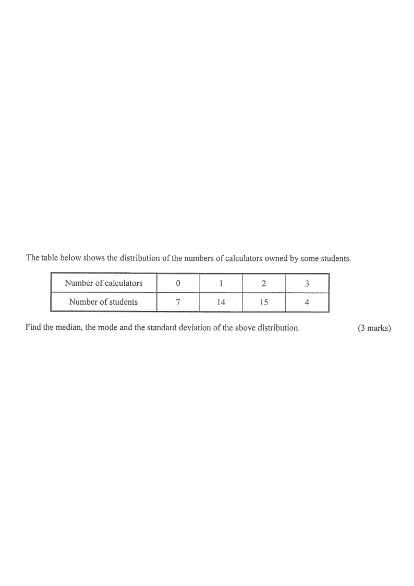

The table below shows the distribution of the numbers of calculators owned by some students.
Number of calculators
0
1
2
3
Number of students
7
14
15
4
Find the median, the mode and the standard deviation of the above distribution. [3 marks]

Figure (original exam diagram)
STEP 1
Set up the working table
Total number of students:
\[ N = 7 + 14 + 15 + 4 = \mathbf{40} \]
Record $f$ (frequency), the cumulative frequency and $fx$:
\[
\begin{array}{c|c|c|c}
x & f & \text{cum. }f & fx\\ \hline
0 & 7 & 7 & 0\\
1 & 14 & 21 & 14\\
2 & 15 & 36 & 30\\
3 & 4 & 40 & 12
\end{array}
\]
\[ \sum f = 40,\qquad \sum fx = 0+14+30+12 = \mathbf{56} \]
Hint: always build a frequency table with columns $x,\ f,\ \text{cum.}f,\ fx$ — the cumulative frequency is needed for the median.
STEP 2
The median
Median of a Discrete Data Set\(\text{median}=\dfrac{x_{N/2}+x_{N/2+1}}{2}\quad(N\text{ even})\)Here \(N=40\), so average the 20th and 21st values, both equal to \(1\).
With $N = 40$ (even), the median is the mean of the $\tfrac{40}{2}=20$th and $21$st values.
From the cumulative frequency, the $20$th and $21$st values both fall in the group $x = 1$ (cum. $f$ goes $7 \to 21$).
\[ \text{Median} = \frac{1+1}{2} = \mathbf{1} \]
Hint: cum. $f = 21 \ge 20$ but cum. $f$ before it is only $7 < 20$, so the 20th/21st values are both $1$.
STEP 3
The mode
The mode is the value with the highest frequency.
\[ f(0)=7,\quad f(1)=14,\quad f(2)=\mathbf{15},\quad f(3)=4 \]
The largest frequency is $15$, which corresponds to $x = 2$.
\[ \text{Mode} = \mathbf{2} \]
Hint: mode = the data value (not the frequency) that occurs most often.
STEP 4
The mean (needed for the s.d.)
Mean of a Frequency Distribution\(\bar{x}=\dfrac{\sum fx}{\sum f}\)Dividing the total \(\sum fx=56\) by the 40 students gives \(1.4\).
Hint: for standard deviation we need both $\sum fx$ and $\sum fx^2$.
STEP 5
The standard deviation
Standard Deviation of a Frequency Distribution\(\sigma=\sqrt{\dfrac{\sum fx^{2}}{\sum f}-\bar{x}^{2}}\)Use \(\sum fx^{2}=110\), \(\sum f=40\) and \(\bar{x}=1.4\) to obtain \(\sqrt{0.79}\).
Use the formula
\[ \sigma = \sqrt{\frac{\sum fx^2}{\sum f} - \left(\frac{\sum fx}{\sum f}\right)^{2}} \]
\[ \sigma = \sqrt{\frac{110}{40} - (1.4)^{2}} = \sqrt{2.75 - 1.96} = \sqrt{0.79} \]
\[ \sigma \approx \mathbf{0.889} \;(\text{to 3 sig. fig.}) \]
Hint: square-root at the very end only; keep full accuracy in the intermediate steps.
Question. The table shows the distribution of the number of books \(x\) read by \(20\) students in a month: \(x=1,2,3,4\) with frequencies \(3,8,6,3\) respectively. Find the median, the mode and the standard deviation of the distribution (correct to 3 significant figures). [3 marks]
Show the worked solution
Step 1. Cumulative frequencies: \(3,\ 11,\ 17,\ 20\), so \(N=20\).
Step 2. Median: the 10th and 11th values both lie in the group \(x=2\), so the median is \(\dfrac{2+2}{2}=2\).
Step 3. Mode: the largest frequency is \(8\), which belongs to \(x=2\), so the mode is \(2\).
Step 4. \(\sum fx=3+16+18+12=49\), so \(\bar{x}=\dfrac{49}{20}=2.45\); also \(\sum fx^{2}=3+32+54+48=137\).